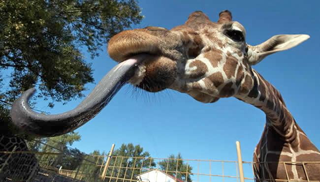

Характеристика
Самцы жирафа достигают высоты до 5,5—6,1 м (около 1/3 длины составляет шея) и весят до 900—1200 кг. Самки, как правило, немного меньше и легче. Шея у жирафов необычайно длинная, и это несмотря на то, что у них, как и почти у всех других млекопитающих, лишь семь шейных позвонков. Большой рост увеличивает нагрузку на систему кровообращения, прежде всего в отношении кровоснабжения головного мозга. Поэтому сердце у жирафов особенно сильное. Оно пропускает 60 л крови в минуту, весит 12 кг и создаёт давление, которое в три раза выше, чем у человека. Тем не менее оно не смогло бы вынести перегрузки при резком опускании и поднятии головы жирафа. Чтобы такие движения не приводили к гибели животного, кровь жирафа гуще, чем у человека, и имеет вдвое более высокую плотность кровяных телец. Помимо этого, у жирафа имеются особые запирающие клапаны в большой шейной вене, прерывающие поток крови таким образом, что сохраняется давление в главной артерии, снабжающей мозг. Тёмный язык жирафа очень длинный и мускулистый: жираф может высовывать его на 45 см и способен захватывать им ветки.